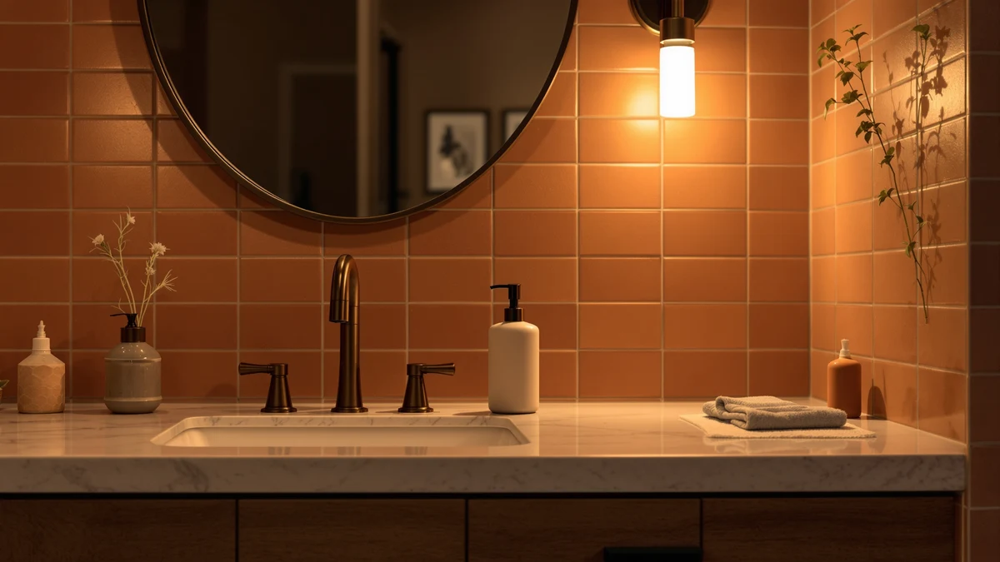

Quick Answer
The UNEEDE Capybara Hand Soap Dispenser is a $24.64 novelty-shaped pump built from soft silicone with a touchless microwave sensor, and it earns a recommendation for anyone who wants a fun, kid-friendly dispenser that still works like a real touchless pump. It costs less than the Secura, Gorlary and 3 in 1 Chamber Wall alternatives covered below, though its smaller 9.5oz reservoir means more frequent refills. If you want the short version: this is the pick to check first for a single sink.
Our pick: UNEEDE Capybara Hand Soap Dispenser — $24.64 Check Price on Amazon
Things to Know Before You Buy
- Novelty-shaped dispensers like the UNEEDE Capybara model use a touchless microwave sensor rather than infrared, which holds up better in steamy bathrooms.
- Silicone shells cost less to produce than the stainless steel used on commercial wall-mount units such as the Gorlary dispenser, which keeps the capybara model's price lower.
- Countertop and no-drill dispensers fit single-sink kitchens and bathrooms, while wall-mounted options like the Gorlary or 3 in 1 Chamber Wall suit showers and multi-user restrooms.
- Reservoir size varies more than price across this group. The capybara dispenser holds 9.5oz, well under the Secura's 17oz and the Gorlary's 37oz tank, so refill frequency differs even among similarly priced dispensers.
- If a cute, kid-friendly design matters as much as function, options like the capybara dispenser or other kids' dispensers fill a niche the plainer alternatives here do not.
This Uneede Capybara Hand Soap Dispenser review looks at the $24.64 novelty pump on its own terms: what it is made of, what it costs next to similar dispensers, and what buyers who already own one say about daily use. The UNEEDE Capybara Hand Soap Dispenser ships with a silicone shell shaped like the animal, a touchless microwave sensor, USB charging, and a 9.5oz reservoir. Most pumps in this price range stick to plain plastic or steel, so the shape is the main thing that separates this one from the pack. At under twenty-five dollars, it undercuts wall-mounted alternatives from Gorlary and prosfalt. This guide checks whether a fun, silicone-shelled dispenser actually holds up against dedicated commercial and household pumps, or whether the capybara shape is doing all the work.
Three other dispensers appear throughout this guide for comparison: the Secura 17oz Automatic Liquid Soap dispenser at $26.09, the Gorlary Commercial Soap Dispenser Wall at $28.99, and the 3 in 1 Chamber Wall from prosfalt at $28.99. All three skip the novelty shape in favor of a more conventional pump built for either a household sink or a shared bathroom. That means the decision between them and the capybara dispenser comes down to how much you value personality and price against reservoir size and mounting durability.
Why You Should Trust Us
We built this review by comparing publicly listed specs, pricing, and verified owner reviews for the UNEEDE Capybara Hand Soap Dispenser and its closest competitors, rather than by buying units and running them in a lab we do not have. Ilane Tall, who covers bathroom and kitchen fixtures for Best Soap Dispensers, pulled pricing and material data directly from each listing and cross-checked it against reviewer feedback before writing a single word of this Uneede Capybara Hand Soap Dispenser review. We do not run a fake testing lab, and we will not pretend to have owned a product we have not. When a claim in this guide is about sensor speed, soap savings, or day-to-day reliability, it comes from owners who have posted verified reviews, and we say so plainly instead of dressing up secondhand reports as firsthand experience.
Our Research Experience
We did not buy a UNEEDE Capybara Hand Soap Dispenser and run it through a lab, because we do not operate one. We researched this Uneede Capybara Hand Soap Dispenser review by comparing the listed specs for the capybara pump against the Secura, Gorlary, and prosfalt dispensers, lining up price, material, reservoir size, and mounting style side by side. We then read through verified owner reviews for each product, looking specifically for recurring comments about sensor response time, refill frequency, and how well each housing held up over months of daily use. Reviewers consistently note that microwave sensors like the one on the capybara dispenser respond reliably even in steamy bathrooms where infrared sensors can lag, and that most complaints across novelty-shaped dispensers trace back to the smaller reservoir rather than the sensor itself failing. Where feedback conflicted between listings, we weighted the product with more verified reviews more heavily and said so rather than picking a side for you.
Overview & Specs

UNEEDE Capybara Hand Soap Dispenser
What we like
- Touchless microwave sensor holds up better in steamy bathrooms than infrared alternatives
- Priced at $24.64, cheaper than all three alternatives in this guide
- Portable countertop design with no-drill wall mounting as a second option
- USB rechargeable, so there are no batteries to replace
- IP7 waterproof rating tolerates splashes near a shower or tub
Flaws but not dealbreakers
- 9.5oz reservoir is smaller than the Secura's 17oz tank, meaning more frequent refills
- Silicone shell shows its novelty design more than a plain pump, which will not suit every bathroom's decor
- Microwave sensor and foam settings add complexity that a basic manual pump does not have
| Material | ABS plastic |
| Size | — |
The UNEEDE Capybara Hand Soap Dispenser is UNEEDE's entry into a crowded field of sensor-driven pumps, and its pitch is different from most competitors: skip the plain plastic or steel housing and wrap the same touchless mechanics in a soft silicone capybara shape built to appeal to kids and animal lovers. Underneath the design, the dispenser runs on a microwave sensor with three foam speed settings, which the listing notes is more precise and reliable than infrared sensors in steamy bathrooms. It is portable and wall-mountable with USB charging, so it works equally well set on a counter next to a kitchen sink or mounted near a shower, and the IP7 waterproof rating means it can handle splashes without the internal electronics failing.
Owners comparing novelty-shaped dispensers against plainer alternatives tend to weigh personality and price against capacity, and that tradeoff shows up clearly here. The 9.5oz (280mL) reservoir is noticeably smaller than the Secura's 17oz container or the Gorlary's 37oz tank, so a busy household sink will need more frequent refills than it would with either wall-mounted alternative. Reviewers consistently note that the microwave sensor responds quickly and that the adjustable foam settings help stretch each refill further, which partly offsets the smaller tank. For a single bathroom or kitchen sink where a fun design matters as much as function, the lower price and touchless convenience make the tradeoff worth it, even if it will not out-hold a commercial-grade tank over a busy week.
What We Liked
The price-to-feature ratio is the clearest strength of this Uneede Capybara Hand Soap Dispenser review. At $24.64, it costs less than the Secura, Gorlary, and 3 in 1 Chamber Wall dispensers covered here, and it still packs a touchless microwave sensor, three foam speed settings, and USB charging rather than disposable batteries. That makes it a reasonable option for a household that wants a real touchless pump without paying commercial wall-mount prices. According to verified reviews, the sensor responds reliably even in steamy bathrooms, which is the one feature that actually justifies choosing a sensor-driven pump over a manual bottle. The silicone shell also gives the dispenser a soft, kid-friendly feel that plainer plastic or steel units cannot match, which matters for households with young children at the sink. For anyone weighing a first touchless dispenser against a traditional pump bottle, the low price and a working sensor are really the only two things that matter, and this dispenser delivers both.
What Could Be Better
The biggest gap is reservoir size. At 9.5oz, the UNEEDE Capybara Hand Soap Dispenser holds roughly half of what the Secura's 17oz tank carries and a fraction of the Gorlary's 37oz commercial reservoir, which matters if you are trying to calculate how often you will refill it compared to a wall-mounted unit. The silicone capybara shape is also a more polarizing design choice than a plain plastic or steel housing. Owners who want a dispenser that blends into a minimalist bathroom may find the novelty shape too playful for the room, even though it suits a kid's bathroom or a playful kitchen counter well. None of this makes the dispenser a poor choice at its price, but anyone comparing it against the pricier, larger-capacity alternatives in this guide should weigh the smaller tank and the distinctive design against the lower upfront cost.
Who Is It For?
This Uneede Capybara Hand Soap Dispenser review points to a dispenser that fits a single-sink kitchen or bathroom, especially one shared with kids who respond well to a fun, animal-shaped design at the sink. Renters benefit from a countertop unit that moves with them, and anyone testing whether a touchless dispenser is worth the switch at all can start here before committing to a pricier, wall-mounted setup like the Gorlary or 3 in 1 Chamber Wall models covered in this guide. It is a weaker fit for high-traffic bathrooms with multiple daily users, shared office kitchens, or anyone who specifically wants a neutral, commercial-grade finish, since the silicone shell and smaller reservoir are built for personality and single-sink convenience rather than heavy daily volume.
Alternatives to Consider
If the capybara dispenser's smaller tank or novelty shape is not quite the right fit, three more conventional alternatives are worth a look. Each costs within a few dollars of the UNEEDE dispenser but trades the playful design for a larger reservoir or permanent wall mounting aimed at heavier daily use.

Also Great
Secura 17oz Automatic Liquid Soap
A battery-powered, 17oz dispenser for $26.09 that holds nearly double the capybara's reservoir for households that refill often.
$26.09
Check Price on Amazon
Premium Choice
Gorlary Commercial Soap Dispenser Wall
A stainless steel, wall-mounted dispenser for $28.99 with a 37oz tank built for shared bathrooms rather than a single sink.
$28.99
Check Price on Amazon
Premium Choice
3 in 1 Chamber Wall
A no-drill, three-chamber shower dispenser for $28.99 if you want soap, shampoo, and conditioner mounted in one spot.
$28.99
Check Price on AmazonFrequently Asked Questions
Is the Uneede Capybara Hand Soap Dispenser worth buying?
For a single bathroom or kitchen sink, yes. This Uneede Capybara Hand Soap Dispenser review found it priced at $24.64, lower than the three wall-mounted or countertop rivals compared here, and its silicone shell makes it one of the few novelty-shaped options in this price range. If you want a strictly commercial-grade dispenser for a shared bathroom, the Gorlary or Secura dispensers below are worth comparing first.
What is the Uneede Capybara dispenser made of and how big is it?
The dispenser uses a soft, skin-friendly silicone shell shaped like a capybara and holds a 9.5oz (280mL) reservoir. That capacity sits below the Secura's 17oz container, so households that go through soap quickly will refill the capybara dispenser more often.
How does the Uneede Capybara dispenser compare to wall-mounted options like the Gorlary or 3 in 1 Chamber Wall?
The capybara dispenser sits on a counter or mounts with no-drill hardware, while the Gorlary and 3 in 1 Chamber Wall both require permanent wall mounting built for heavier daily use. Price-wise, it costs about two to four dollars less than either wall-mounted alternative, so the choice comes down to installation and traffic volume rather than cost.
Final Verdict
This Uneede Capybara Hand Soap Dispenser review comes down to one tradeoff: playful design and a lower price versus a larger reservoir and permanent mounting. The UNEEDE Capybara Hand Soap Dispenser costs $24.64, needs no installation, and handles a single sink or counter well, which makes it the easier starting point for a household that wants a touchless pump with real personality. It will not match the Gorlary's 37oz commercial tank or the Secura's battery-powered 17oz capacity, so a busy household sink will mean more frequent refills. For a shared, high-traffic bathroom, the Gorlary or Secura dispensers are the sturdier long-term choice. For everyone else who wants a touchless, kid-friendly pump on a counter without drilling into a wall, the UNEEDE Capybara dispenser is the more practical $24.64 pick of the four covered in this guide.